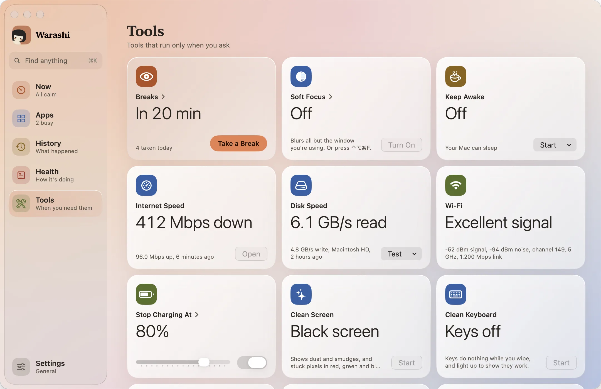
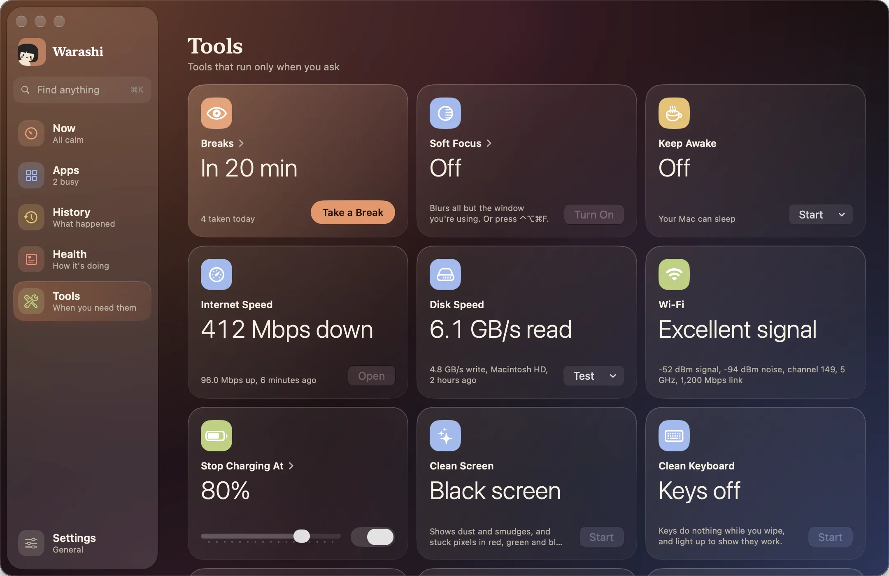

Tutup MacBook dan ia akan tidur: unduhan berhenti, build terjeda, server yang sedang Anda jalankan menjadi senyap. macOS tidak punya sakelar untuk "tetap bekerja saat tutup tertutup" kecuali layar eksternal dan keyboard tersambung (mode clamshell). Berikut yang berhasil, yang tidak, dan cara melakukannya dengan aman.
1. Cara bawaan: mode clamshell
Colokkan daya, layar eksternal, dan keyboard atau mouse. Tutup MacBook dan Mac tetap berjalan di layar eksternal. Itu cara yang didukung Apple, dan yang tepat jika Anda punya monitor. Tanpa ketiganya (daya, layar, perangkat input), Mac tidur saat tutup ditutup.
2. Cara Terminal: caffeinate dan pmset
caffeinate -i mencegah Mac tidur saat idle selama perintah berjalan, tetapi ia tidak menghentikan tidur karena layar ditutup. Untuk itu Anda butuh sudo pmset -a disablesleep 1, yang menonaktifkan tidur sama sekali, termasuk dengan layar tertutup. Ini berhasil, dengan tiga catatan: ia butuh kata sandi administrator setiap kali, mudah lupa mematikannya lagi, dan MacBook yang dibiarkan seperti itu di dalam tas bisa panas dan menguras baterainya sampai habis.
3. App yang bekerja sesuai keinginan Anda
App bar menu bisa menjaga Mac tetap terjaga selama yang Anda mau: 30 menit, sampai unduhan atau build selesai, selama app tertentu terbuka, atau sampai Anda bilang berhenti. Yang bagus menambahkan opsi layar tertutup dengan pengaman: hanya saat dicolokkan, dan dengan batas waktu, agar Mac tidak kepanasan di dalam tas atau menghabiskan baterainya.


Apakah aman menjalankan MacBook dengan tutup tertutup?
Ya, di atas meja dan tercolok. Mode clamshell milik Apple melakukan persis itu. Hindari dua hal: menjalankannya tertutup dengan baterai selama berjam-jam (baterai terkuras dengan layar mati dan Anda tidak menyadarinya), dan memasukkan MacBook yang sedang menyala ke dalam tas, tempat lubang ventilasi keyboard tertutup. Pilih alat yang melepas tahanan layar saat pengisi daya dicabut, dan atur batas waktu.
Saat Mac tetap tidur
- Pengisi daya dicabut. Kebanyakan alat layar tertutup melepaskan tahanan saat memakai baterai, dengan sengaja.
- Hanya layarnya yang mati. Mac masih terjaga; macOS mematikan dan mengunci layar menurut jadwalnya sendiri. Periksa log alat Anda untuk entri tidur yang sebenarnya sebelum menyalahkannya.
- Alat itu berhenti atau diperbarui. Pilih yang mengingat sesi yang berjalan saat ia sendiri dimulai ulang.
- Baterai sampai ke batas bawah. Alat yang baik berhenti di sekitar 10% untuk melindungi baterai.